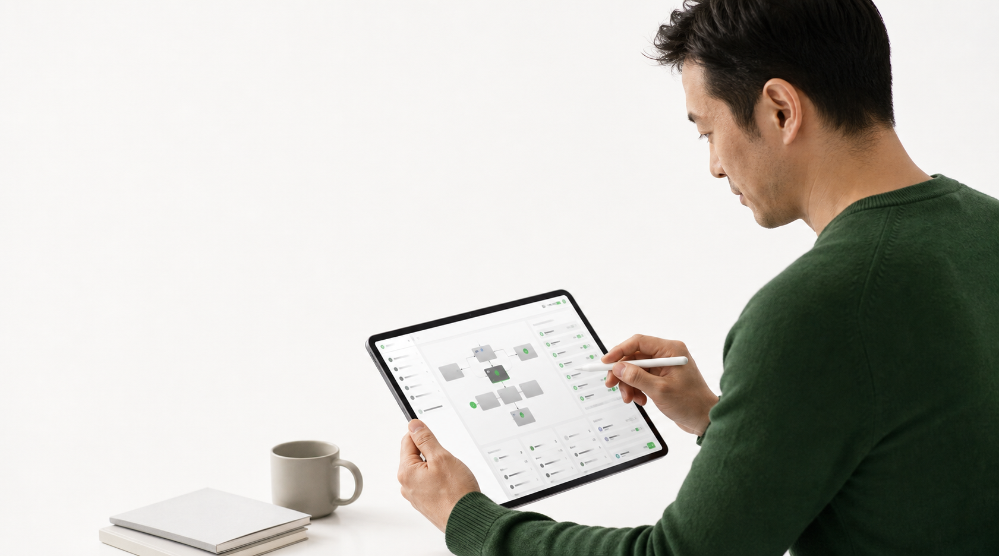
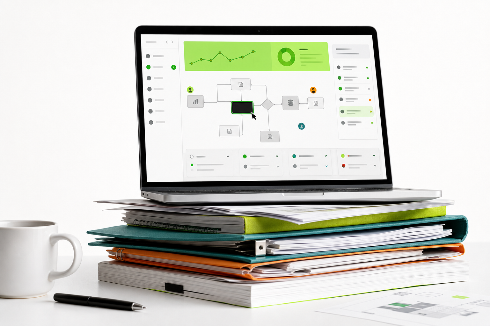
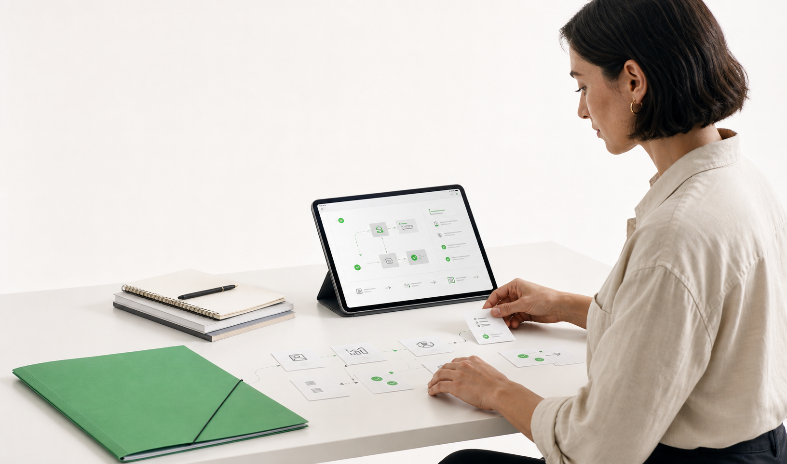
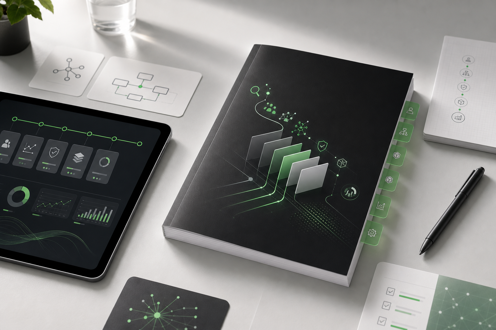

中国场景 + Q2Q 工作单元素材候选
C 系列是当前推荐审核组：默认中国人、中国企业场景，并且每张图都对应一个可诊断、可复核、可派单的工作单元。S 系列保留为 Sana-style 照片语言参考；P 系列是早期 v1 方向，仅作对照。







C 系列是当前推荐审核组：默认中国人、中国企业场景，并且每张图都对应一个可诊断、可复核、可派单的工作单元。S 系列保留为 Sana-style 照片语言参考；P 系列是早期 v1 方向，仅作对照。



